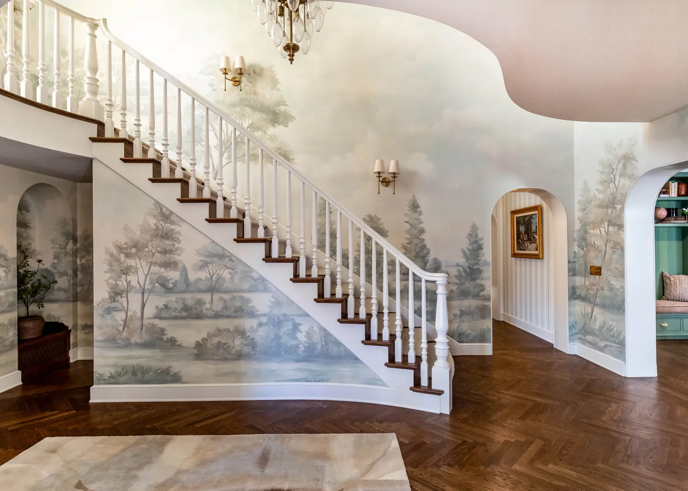
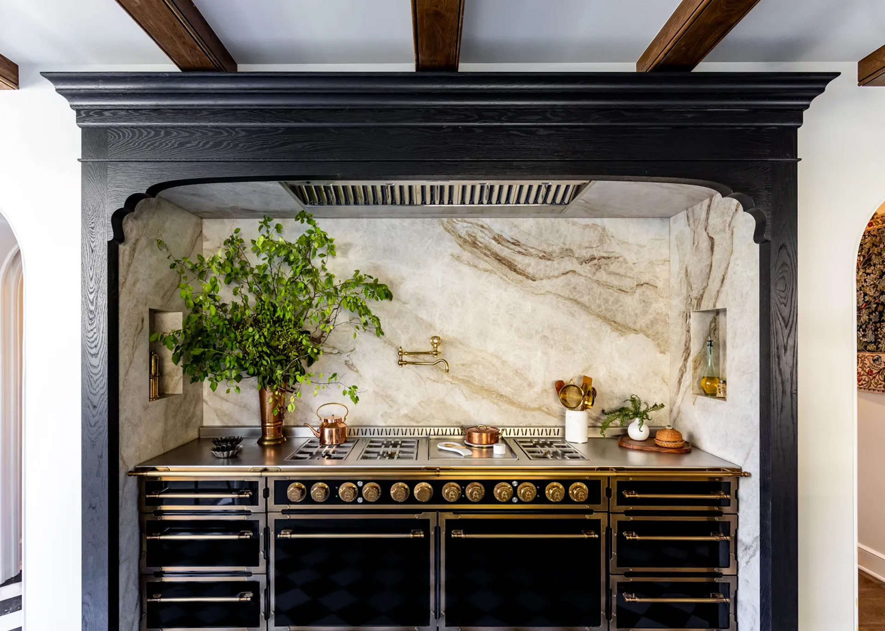
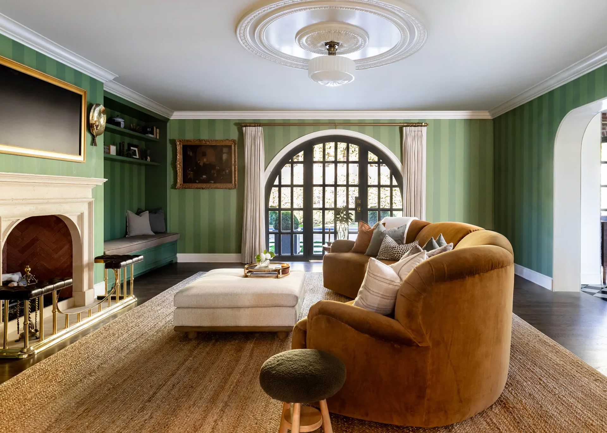
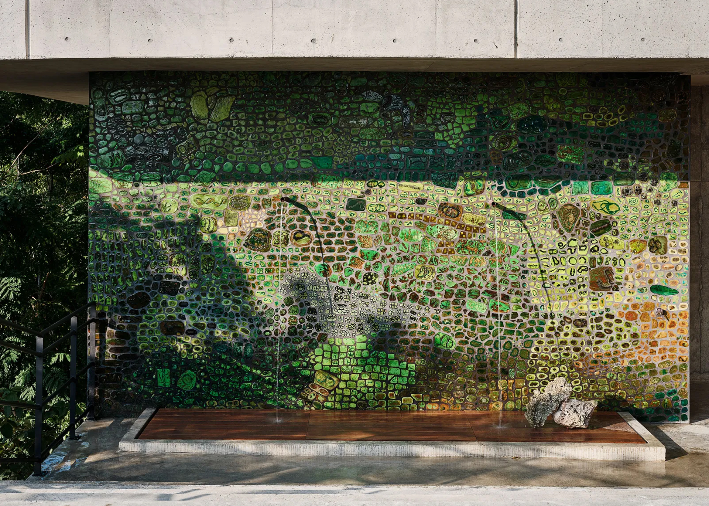
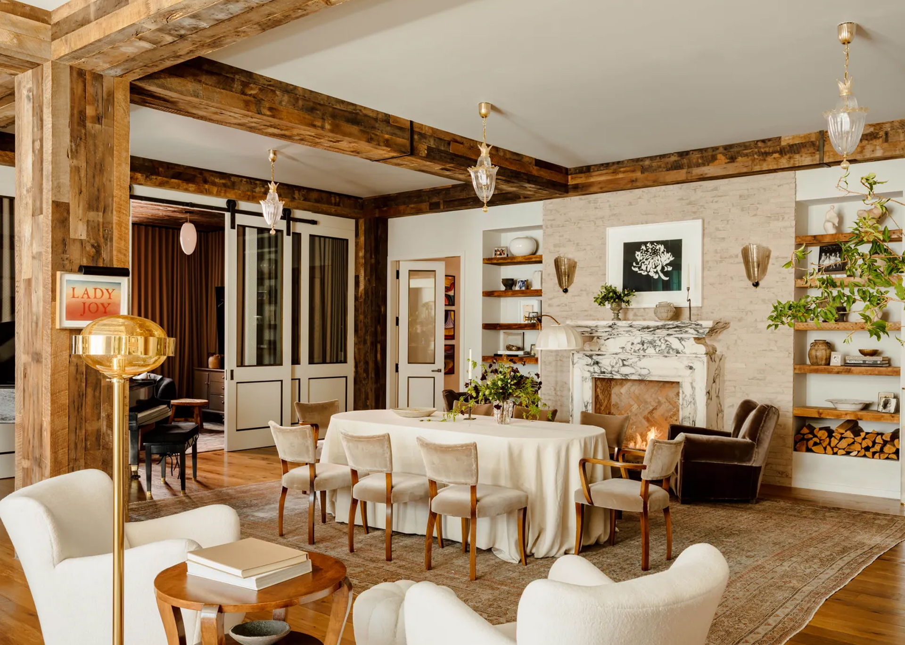
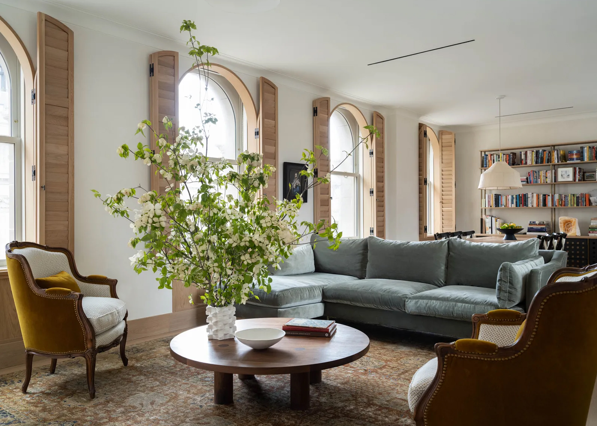
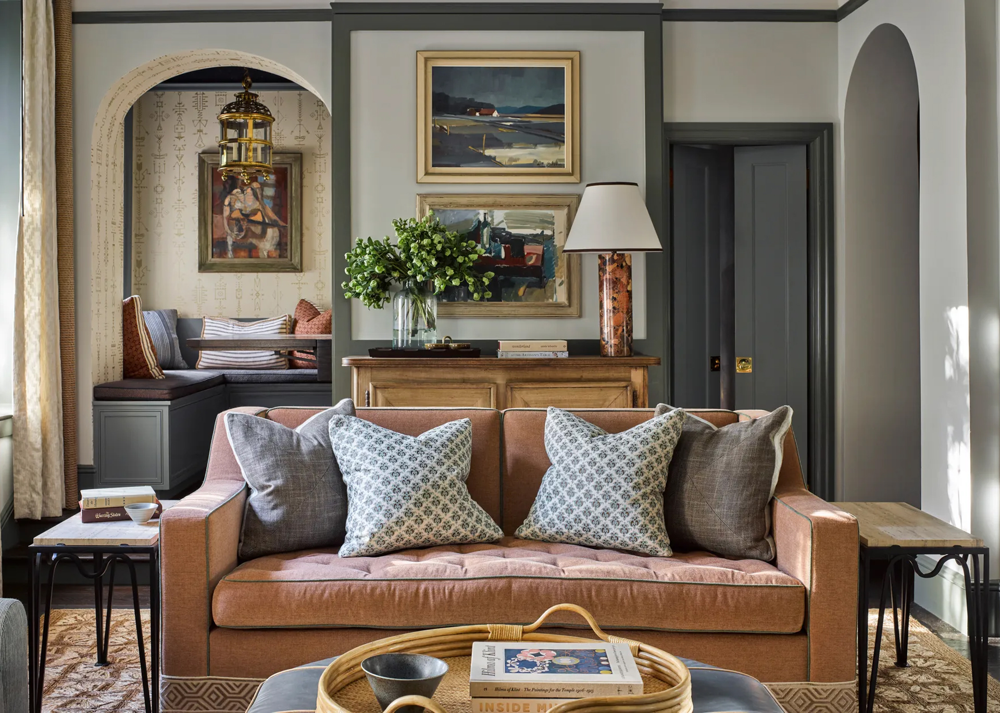

Inside Emma Robert's home.

Staircase inside Tan France's Tudor-Style Dream House in Salt Lake City.

Kitchen inside Tan France's Tudor-Style Dream House in Salt Lake City.

Living room inside Tan France's Tudor-Style Dream House in Salt Lake City.

Custom artwork wall in Diplo's outdoor shower in Jamaica home.

Dining room inside Hollywood Film amker Shawn Levy's loft.

Amanda Seyfried's farmhouse inspired New York City living room.

Karen Gillan's California Cottage home with a Scottish twist.